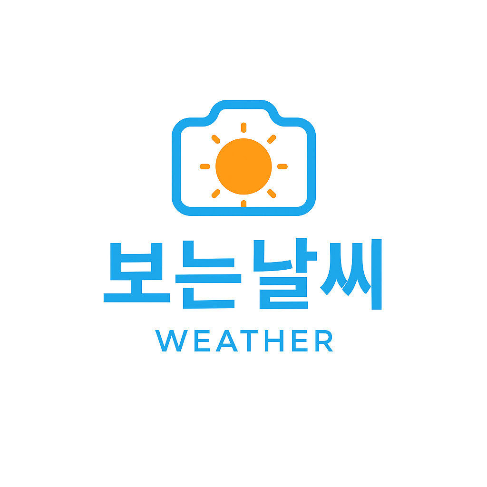

보는날씨 다운로드
iPhone은 App Store에서,
갤럭시·Android는 Google Play에서 설치하세요.
날씨·CCTV·위젯과 VAMONOS를 만나보세요.

무료 다운로드 · 광고 및 앱 내 구입 포함

iPhone은 App Store에서,
갤럭시·Android는 Google Play에서 설치하세요.
날씨·CCTV·위젯과 VAMONOS를 만나보세요.
무료 다운로드 · 광고 및 앱 내 구입 포함